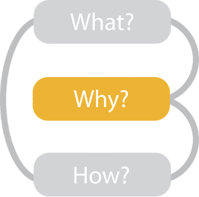
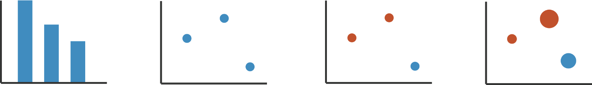
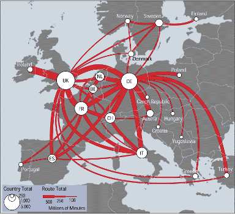
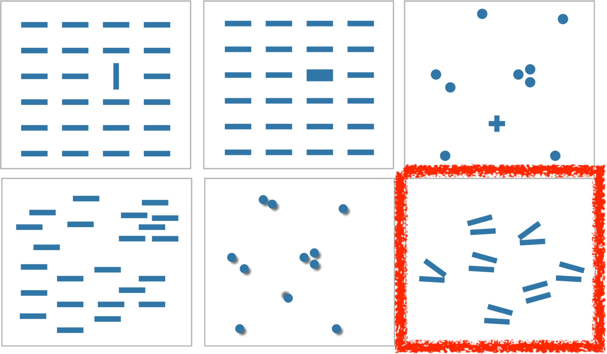
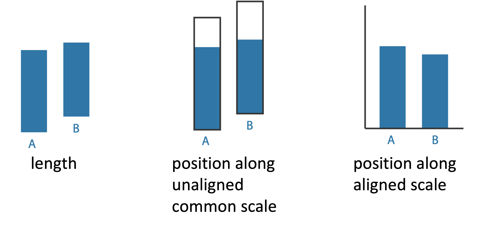
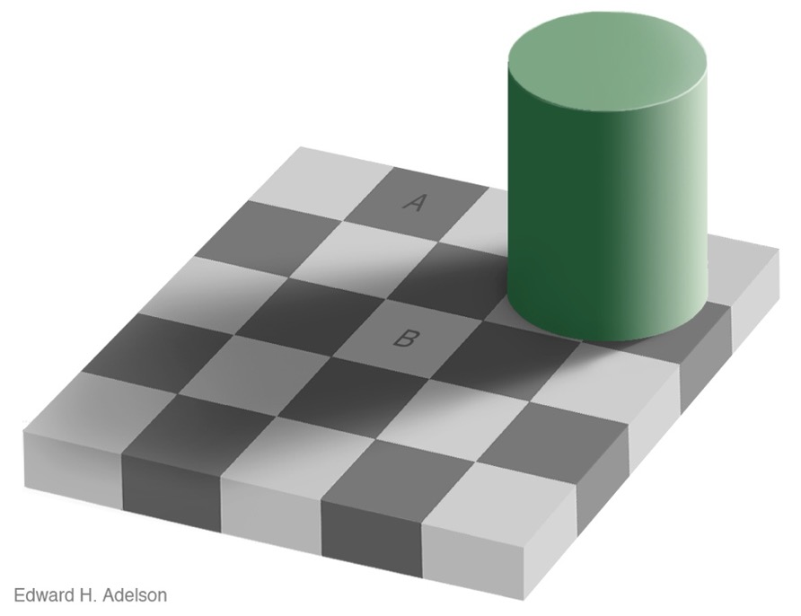
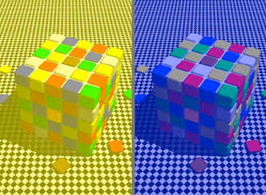

Computer-based visualization systems provide visual representations of datasets designed to help people carry out tasks more effectively.
UNDERSTAND THE TASK
Computer-based visualization systems provide visual representations of datasets designed to help people carry out tasks more effectively.

VISUAL ENCODING
Computer-based visualization systems provide visual representations of datasets designed to help people carry out tasks more effectively.
OTHER FRAMEWORKS
The Tidyverse
The Grammar of Graphics
Tufte
TIDYVERSE
R packages for data science:
The tidyverse is an opinionated collection of R packages designed for data science. All packages share an underlying design philosophy, grammar, and data structures. The best way to explore and understand the tidyverse is with cheetsheets, like this one for tidyr!
d3 =require("d3@7")chart =ForceGraph(miserables, {nodeId: d => d.id,nodeGroup: d => d.group,nodeTitle: d =>`${d.id}\n${d.group}`,linkStrokeWidth: l =>Math.sqrt(l.value), width,height:1000, invalidation // a promise to stop the simulation when the cell is re-run})miserables =FileAttachment("miserables.json").json()// Copyright 2021 Observable, Inc.// Released under the ISC license.// https://observablehq.com/@d3/force-directed-graphfunctionForceGraph({ nodes,// an iterable of node objects (typically [{id}, …]) links // an iterable of link objects (typically [{source, target}, …])}, { nodeId = d => d.id,// given d in nodes, returns a unique identifier (string) nodeGroup,// given d in nodes, returns an (ordinal) value for color nodeGroups,// an array of ordinal values representing the node groups nodeTitle,// given d in nodes, a title string nodeFill ="currentColor",// node stroke fill (if not using a group color encoding) nodeStroke ="#fff",// node stroke color nodeStrokeWidth =1.5,// node stroke width, in pixels nodeStrokeOpacity =1,// node stroke opacity nodeRadius =5,// node radius, in pixels nodeStrength, linkSource = ({source}) => source,// given d in links, returns a node identifier string linkTarget = ({target}) => target,// given d in links, returns a node identifier string linkStroke ="#999",// link stroke color linkStrokeOpacity =0.6,// link stroke opacity linkStrokeWidth =1.5,// given d in links, returns a stroke width in pixels linkStrokeLinecap ="round",// link stroke linecap linkStrength, colors = d3.schemeTableau10,// an array of color strings, for the node groups width =1000,// outer width, in pixels height =1000,// outer height, in pixels invalidation // when this promise resolves, stop the simulation} = {}) {// Compute values.const N = d3.map(nodes, nodeId).map(intern);const LS = d3.map(links, linkSource).map(intern);const LT = d3.map(links, linkTarget).map(intern);if (nodeTitle ===undefined) nodeTitle = (_, i) => N[i];const T = nodeTitle ==null?null: d3.map(nodes, nodeTitle);const G = nodeGroup ==null?null: d3.map(nodes, nodeGroup).map(intern);const W =typeof linkStrokeWidth !=="function"?null: d3.map(links, linkStrokeWidth);const L =typeof linkStroke !=="function"?null: d3.map(links, linkStroke);// Replace the input nodes and links with mutable objects for the simulation. nodes = d3.map(nodes, (_, i) => ({id: N[i]})); links = d3.map(links, (_, i) => ({source: LS[i],target: LT[i]}));// Compute default domains.if (G && nodeGroups ===undefined) nodeGroups = d3.sort(G);// Construct the scales.const color = nodeGroup ==null?null: d3.scaleOrdinal(nodeGroups, colors);// Construct the forces.const forceNode = d3.forceManyBody();const forceLink = d3.forceLink(links).id(({index: i}) => N[i]);if (nodeStrength !==undefined) forceNode.strength(nodeStrength);if (linkStrength !==undefined) forceLink.strength(linkStrength);const simulation = d3.forceSimulation(nodes).force("link", forceLink).force("charge", forceNode).force("center", d3.forceCenter()).on("tick", ticked);const svg = d3.create("svg").attr("width", width).attr("height", height).attr("viewBox", [-width /2,-height /2, width, height]).attr("style","max-width: 100%; height: auto; height: intrinsic;");const link = svg.append("g").attr("stroke",typeof linkStroke !=="function"? linkStroke :null).attr("stroke-opacity", linkStrokeOpacity).attr("stroke-width",typeof linkStrokeWidth !=="function"? linkStrokeWidth :null).attr("stroke-linecap", linkStrokeLinecap).selectAll("line").data(links).join("line");const node = svg.append("g").attr("fill", nodeFill).attr("stroke", nodeStroke).attr("stroke-opacity", nodeStrokeOpacity).attr("stroke-width", nodeStrokeWidth).selectAll("circle").data(nodes).join("circle").attr("r", nodeRadius).call(drag(simulation));if (W) link.attr("stroke-width", ({index: i}) => W[i]);if (L) link.attr("stroke", ({index: i}) => L[i]);if (G) node.attr("fill", ({index: i}) =>color(G[i]));if (T) node.append("title").text(({index: i}) => T[i]);if (invalidation !=null) invalidation.then(() => simulation.stop());functionintern(value) {return value !==null&&typeof value ==="object"? value.valueOf() : value; }functionticked() { link.attr("x1", d => d.source.x).attr("y1", d => d.source.y).attr("x2", d => d.target.x).attr("y2", d => d.target.y); node.attr("cx", d => d.x).attr("cy", d => d.y); }functiondrag(simulation) { functiondragstarted(event) {if (!event.active) simulation.alphaTarget(0.3).restart();event.subject.fx=event.subject.x;event.subject.fy=event.subject.y; }functiondragged(event) {event.subject.fx=event.x;event.subject.fy=event.y; }functiondragended(event) {if (!event.active) simulation.alphaTarget(0);event.subject.fx=null;event.subject.fy=null; }return d3.drag().on("start", dragstarted).on("drag", dragged).on("end", dragended); }returnObject.assign(svg.node(), {scales: {color}});}import {howto} from"@d3/example-components"import {Swatches} from"@d3/color-legend"
CHANNELS
CHANNELS control the appearance of MARKS.
They are proportional to or based on ATTRIBUTES.
Their properties differ in the type and amount of information that can be conveyed to the human perceptual system.
VISUAL ENCODING EXAMPLE
Let’s analyze the idiom structures below in terms of marks and channels.

REDUNDANT ENCODING
Uses multiple channels for the same attribute.
Sends a stronger message
Uses up channels
CHOOSING CHANNELS
EXPRESSIVENESS
The visual encoding should express all of, and only, the information in the dataset attributes.
EFFECTIVENESS
Channels differ in accuracy of perception.
The importance of the attribute should match the salience of the channel (its noticability).
CHANNEL RANKINGS
Note that spatial position ranks high for both types of channels.
GROUPING
Containment
Connection
Proximity
Same spatial region.
Similarity
Same values as other channels.
SUMMARY SO FAR
CHANNEL EFFECTIVENESS
Accuracy: how precisely can we tell the difference between encoded items?
Discriminability: how many unique steps can we perceive?
Separability: is our ability to use this channel affected by another one?
How many usable steps are in the channel? Are the differences between items perceptible to the human as intended?

SEPARABILITY VS INTEGRALITY
Separable channels are orthogonal and independent. Integral channels are inextricably combined. Attempts to encode different information with integral channels creates Interference.
Figure 5.10. Pairs of visual channels fall along a continuum from fully separable to intrinsically integral. Color and location are separable channels well suited to encode different data attributes for two different groupings that can be selectively attended to. However, size interacts with hue, which is harder to perceive for small objects. The horizontal size and and vertical size channels are automatically fused into an integrated perception of area, yielding three groups. Attempts to code separate information along the red and green axes of the RGB color space fail, because we simply perceive four different hues.
POPOUT
VISUAL POPOUT is often called preattentive processing or tunable detection.
find the red dot! How long does it take?
Popout results from our low-level visual system performing massively parallel processing on certain visual channels, eliminating the need for the viewer to consciously direct attention to items one by one (serial search).
Figure 5.11. Visual popout. (a) The red circle pops out from a small set of blue circles. (b) The red circle pops out from a large set of blue circles just as quickly. (c) The red circle also pops out from a small set of square shapes, although a bit slower than with color. (d) The red circle also pops out of a large set of red squares. (e) The red circle does not take long to find from a small set of mixed shapes and colors. (f) The red circle does not pop out from a large set of red squares and blue circles, and it can only be found by searching one by one through all the objects.
POPOUT
Many channels are compatible with preattentive processing and facilitate popout:
tilt
size
shape
proximity
shadow direction
But not all!
Example: parallel line pairs do not pop out from tilted pairs.

RELATIVE VS ABSOLUTE JUDGEMENTS
The human perceptual system is fundamentally based on relative judgements, not absolute ones. This is why accuracy increases with common frame/scale and alignment.
Weber’s Law: The detectable difference in stimulus intensity \(I\) as a fixed percentage \(K\) of the object magnitude: \(dI/I=K\) .

The filled rectangles differ in length by 1:9, and it is therefore difficult to detect the difference without aligment. The white rectangles differ in length by 1:2, it is easier to see this difference even when the objects are unaligned.
RELATIVE LUMINANCE JUDGEMENTS
Human perception of luminance is completely contextual, and is based on contrast with surrounding colors.

RELATIVE COLOR JUDGEMENTS
Our visual system evolved to provide color constancy so that the same surface is identifiable across a broad set of illumination conditions, even though a physical light meter would yield very different readings. While the visual system works very well in natural environments, many of its mechanisms work against simple approaches to visually encoding information with color.

Figure 5.15 shows two colorful cubes. In Figure 5.15(a) corresponding squares both appear to be red. In Figure 5.15(b), masks show that the tile color in the image apparently illuminated by a yellowish light source is actually orange, and for the bluish light the tiles are actually purple.